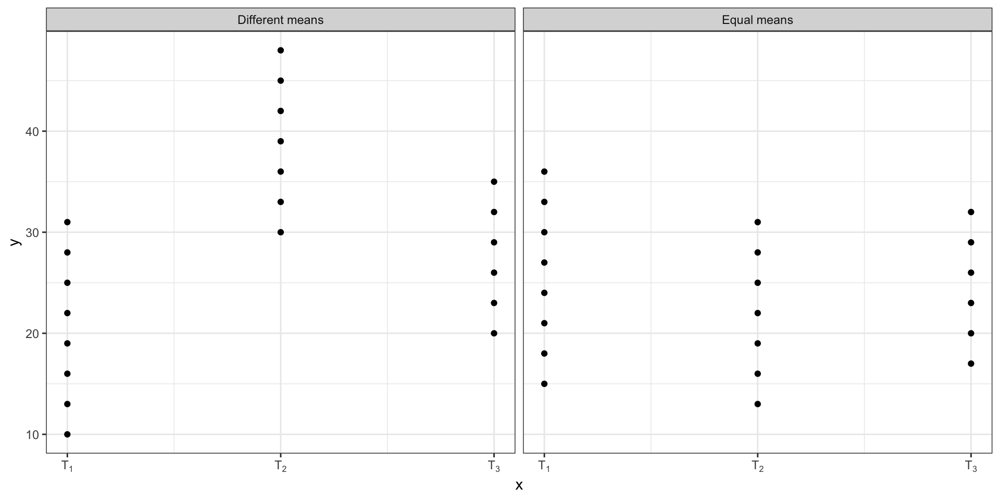

Df Sum Sq Mean Sq F value Pr(>F)
variety 2 0.2766 0.13832 16.97 0.000317 ***
Residuals 12 0.0978 0.00815
---
Signif. codes: 0 '***' 0.001 '**' 0.01 '*' 0.05 '.' 0.1 ' ' 1Analysis of Variance and F-test; Completely Randomized Design
In this section, we will examine the case of inference where we have multiple means, \(\mu_1,\mu_2,\dots,\mu_t\), where we have \(t>2\) populations.
A natural approach to think of when faced with the task of determining whether evidence points to \(\mu_1 = \mu_2 = \mu_3 =\cdots = \mu_t\) or not, is to draw on knowledge acquired in Part 4 and perform \(t\)-tests of \(H_0: \mu_i = \mu_j\) for all pairs of means.
If all pairwise tests of means fail to reject the null hypotheses, then one may conclude that all means \(\mu_i\) are equal.
This procedure has a serious flaw which will now be described.
Take the case \(t=3\), so that we have three populations with means \(\mu_1, \mu_2, \mu_3\).
A sample from each population yields sample means and variances \(\bar{y}_1, \bar{y}_2, \bar{y}_3, s_1^2, s_2^2, s_3^2\).
All possible differences \(\mu_i-\mu_j\) are: \[\mu_1 - \mu_2, \ \mu_1 - \mu_3, \ \mu_2 - \mu_3 \ .\]
To test each \(H_0: \mu_i - \mu_j = 0\), a \(t\)-statistic used is of the form \[t_{ij} = \frac{\bar{y}_i-\bar{y}_j}{s_p\sqrt{\frac{1}{n_i} + \frac{1}{n_j}}}, \quad s_p^2 = \frac{(n_i-1)s_i^2 + (n_j-1)s_j^2}{n_i + n_j - 2}\]
Suppose each test is made at the same level \(\alpha\). Thus for each pair (\(i,j\))
\(P(|t_{ij}| > t_{\alpha/2}\) \(|\) when \(H_0\) is true) = \(\alpha\).
In other words, the Type I error probability for each test is \(\alpha\). We shall call \(\alpha\) the per-comparison error rate.
Now let us ask the question – What is the probability of making one or more Type I errors when we make all three tests? ( We shall call this the overall error rate.)
Theory says that if the three \(t\) random variables were statistically independent then the overall error rate is \(1 - (1-\alpha)^3\) (this works out to 0.14 if \(\alpha\) = 0.05, much larger than .05)
The three test statistics are not independent. For example \(t_{12}\) and \(t_{13}\) both involve \(\bar{y}_1\). Furthermore, all three have the same denominator. So they are not statistically independent.
Thus the overall error rate is not exactly 0.14 for our three test situation, and computing its exact value is difficult in theory.
In general, for \(c\) tests made at level \(\alpha\), the overall error rate is larger than \(1-(1-\alpha)^c\).
This is the flaw in the multiple testing approach to testing \(H_0: \mu_1 = \mu_2 = \cdots = \mu_t\).
One solution is to use a very small \(\alpha\) for each test in order to have a reasonably small overall error rate.
For example, in the previous situation, if we had \(\alpha=.01\) then the overall error rate would be less than \(.03\).
We would like to avoid doing this if possible, because we will lose power by using small \(\alpha\) for each test.
The alternative to making multiple \(t\)-tests is to make a single \(F\)-test of \(H_0: \mu_1 = \mu_2 = \cdots = \mu_t\) versus \(H_a:\) at least one \(\mu_j\) is different in value.
This is called the analysis of variance \(F\)-test.
We can, at this point, begin talking in terms of experiments and their outcome. An experiment is a planned data collection activity.
A simplistic view is that an experiment is a planned way to observe the effect of treatments that are applied to experimental units.
Different amounts of a headache drug (treatments) are given to people with headache (experimental units) to observe the effect.
Different furnace temperatures (treatments) are used to temper steel rods (experimental units) to see the extent of tempering for each temperature.
In this context we can imagine theoretically a parent population of experimental units whose measure of interest has mean \(\mu\) and variance \(\sigma_{\epsilon}^2\).
We imagine applying each treatment \(i\) to all elements in the parent population to obtain a treated population, say \(T_i\).
We will assume the treated population \(T_i\) has mean \(\mu_i\), possibly different than \(\mu\), but its variance is \(\sigma_\epsilon^2\), i.e., the treatment doesn’t affect the variance among experimental units, \(\sigma_\epsilon^2\).
In the past we have talked about populations without worrying about how they might have materialized. Here we are simply saying that we can imagine some populations as arising through experimentation.
The simplest experimental design is named the completely randomized design (CRD).
Here we have (say) \(t\) treatments and (say) \(nt\) experimental units. These experimental units are divided into \(t\) sets of \(n\) and the sets are assigned at random, each to a treatment.
We can, equivalently, characterize this design as one that acquires a simple random sample of size \(n\) from each of \(t\) different treated populations \(T_1, T_2, \ldots, T_t\).
Each of these populations has mean \(\mu_i\) and variance \(\sigma_\epsilon^2, \ i = 1, 2, \ldots, t\).
If all of the treatments have the population mean \(\mu\) then \(\mu_1 = \mu_2 = \cdots = \mu_t = \mu\).
If this were the case, the variation among \(n\) samples taken from each treated population \(T_1, T_2, \ldots, T_t\) (called the within sample variance) would be the same as the variation among all \(nt\) sample values.
If some of the \(\mu_j\) are different, then the variance in the overall sample will be inflated due to differences in population means, while the within sample variances would remain the same for each sample.

This is the motivation for analyzing variances when looking for differences in population means.
Note that the expected value of the mean square among treatment groups is \(\sigma_\epsilon^2\) when \(\mu_1 = \mu_2 = \cdots = \mu_t\).
This expectation gets larger than \(\sigma_\epsilon^2\) as the \(\mu_i\)’s get further apart in value.
Thus the ratio:
\[ \frac{\text{Square between treatment groups}}{\text{Mean Square within treatment groups}} \]
has expected (average) value 1 when \(\mu_1 = \mu_2 = \cdots = \mu_t\) and greater than one otherwise.
It will be difficult for us to decide how much larger than 1 the ratio must be before we declare that at least one \(\mu_i\) is different from the others.
The solution to this problem is to assume the treated populations are Normally distributed.
Then the above ratio is an \(F\) random variable whenever \(\mu_1 = \mu_2 = \cdots = \mu_t\).
When the \(\mu_i\) are not all equal, the distribution of this ratio will be shifted to the right.
Thus the observed value of the above ratio will be larger than the percentile value from the F-table at a specified level \(\alpha\).
Thus we may test the hypothesis
\(H_0: \mu_1 = \mu_2 = \cdots \mu_t\) vs. \(H_a:\) at least one \(\mu_i\) different,
using the statistic \(F\) = \(\frac{\rm{Mean~ Square~ Between~ Groups~}}{\rm{Mean~ Square~ Within~ Groups}}\)
Since our test involves essentially all mean values \(\bar{y}\)’s, the central limit theorem tells us that we will have approximately an \(F\) random variable if the treated populations are not dramatically different than normal populations.
The F-test is carried out by constructing an analysis of variance table discussed below.
Data: (Note: the sample sizes in the \(t\) treatment groups need not be the same.)
| Treatment 1: | \(y_{11},\ y_{12}, \ldots,\ y_{1n_{1}}\) | \(\bar{y}_{1.}\) |
| Treatment 2: | \(y_{21},\ y_{22}, \ldots,\ y_{2n_{2}}\) | \(\bar{y}_{2.}\) |
| ⋮ | \(\vdots\) | \(\vdots\) |
| Treatment t: | \(y_{t1},\ y_{t2}, \ldots,\ y_{tn_{t}}\) | \(\bar{y}_{t.}\) |
Let \(n_T = n_1 + n_2 + \cdots n_t\) denote total number of observations.
| Source | df | SS | MS | F |
|---|---|---|---|---|
| Treatment | \(t-1\) | \(SSB = \displaystyle\sum_{i=1}^t n_i(\bar{y}_{i.}-\bar{y}_{..})^2\) | \(SSB/(t-1)\) | \(MSB/MSE\) |
| Error | \(n_T-t\) | \(SSW = \displaystyle\sum_{i=1}^t\sum_{j=1}^{n_i}(y_{ij}-\bar{y}_{i.})^2\) | \(SSW/(n_T-t) \equiv MSE\) | |
| Total | \(n_T-1\) | \(\displaystyle\sum_{i=1}^t\sum_{j=1}^{n_i}(y_{ij}-\bar{y}_{..})^2\) |
where
\[\begin{eqnarray*} \rm{SSW} &=& \sum_i^t \sum_j^{n_i} (y_{ij} - \bar{y}_{i.})^2 = (n_1-1)s_1^2 + (n_2-1)s_2^2 + \cdots + (n_t-1)s_t^2\\[.1in] \rm{MSE} &=& \rm{SSW}/[(n_1-1) + (n_2-1) + \cdots + (n_t - 1)] = s^2 \end{eqnarray*}\]
SSW is simply the familiar pooled SS that we saw for the 2 sample case, extended to the \(t > 2\) case.
MSE is the pooled estimator of the population variance, \(\sigma^2_{\epsilon}\).
Model for data from a CRD
The model of the CRD which we will use is: \[y_{ij} = \mu + \alpha_i + \epsilon_{ij},\ \ i=1,2,\ldots,t; \ \
j=1,2,\ldots,n\] where \(E(\epsilon_{ij}) = 0,\ \ Var(\epsilon_{ij}) = \sigma_\epsilon^2,\) and the \(\epsilon_{ij}\)’s are all independent.
Here \(\alpha_i\) is the effect due to treatment \(i\).
Thus the treated population means are \(\mu_i = \mu + \alpha_i\) in this notation.
If none of the treatments has an effect then \(\alpha_1, \alpha_2, \cdots \alpha_t\) are all zero which is equivalent to \(\mu_1 = \mu_2 = \cdots = \mu_t = \mu\) for some \(\mu\).
We may talk of treatment means or treatment effects in the single treatment factor CRD experiments irrespective of sample size.
| Variety | 1 | 2 | 3 | 4 | 5 | n | \(\bar{X}_i\) | \(s^2_i\) |
|---|---|---|---|---|---|---|---|---|
| 1 | 0.35 | 0.40 | 0.58 | 0.50 | 0.47 | 5 | 0.460 | 0.00795 |
| 2 | 0.65 | 0.70 | 0.90 | 0.84 | 0.79 | 5 | 0.776 | 0.01033 |
| 3 | 0.60 | 0.80 | 0.75 | 0.73 | 0.66 | 5 | 0.798 | 0.00617 |
| Source of Variation | d.f. | S.S. | M.S. | F |
|---|---|---|---|---|
| Variety | 2 | .2766 | .13832 | 16.97 |
| Error | 12 | .0978 | .00815 | |
| Total | 14 | .3748 |
Since the computed \(F\) value exceeds \(F_{.05,2,12} = 3.89\), the null hypothesis that the mean phosphorus content for the three varieties are all equal is rejected.
It appears that the mean phosphorus content for Variety 1 is smaller than those for Varieties 2 and 3. We will discuss tests for these later.
Df Sum Sq Mean Sq F value Pr(>F)
variety 2 0.2766 0.13832 16.97 0.000317 ***
Residuals 12 0.0978 0.00815
---
Signif. codes: 0 '***' 0.001 '**' 0.01 '*' 0.05 '.' 0.1 ' ' 1To summarize, our model for the multiple population case is (possibly unequal sample size) \[y_{ij} = \mu + \alpha_i + \epsilon_j \quad i=1,2,\ldots,t; \ j=1,2,\ldots,n_i\] where \(\epsilon_{ij}\)’s are independent, normally distributed and for each \(i\) the population parameters are (\(\mu_i, \sigma_\epsilon^2\)).
A problem occurs if there is heterogeneity of variance. \[H_0: \sigma_1^2 = \sigma_2^2 = \cdots = \sigma_t^2 \rm{\ vs.\ } H_a: \rm{~not~all~} \sigma_i^2 \rm{'s~are~equal}\]
A test of this hypothesis, proposed by Hartley (1940) was previously discussed. The test is the \(F\)-max test \[F_{\rm{max}} = \frac{\rm{{max}}(S_i^2)}{\rm{min}(S_i^2)}\]
This uses the largest and smallest of the population sample variances.
The test statistic presumes equal sample sizes.
If sample sizes are not equal use the largest \(n_i\).
When sample sizes are nearly equal, heterogeneity of variance is not as great a problem unless variances are severely different. Such cases are usually detectable by simply looking at the sample variances.
Hartley’s test is very sensitive to departures from normality. An alternative test, Levine’s test was also briefly discussed in a lab.
When heterogeneity appears to be present, a variance stabilizing transformation can sometimes be found.
STAT 801A